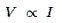
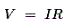
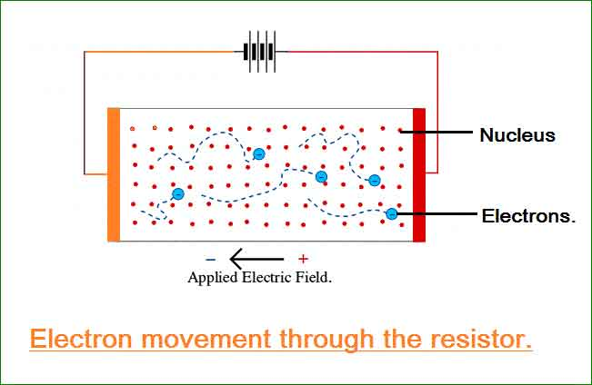
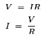
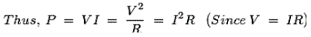

The most basic quantities of electricity are voltage, electric current and resistance. Ohm's law shows a simple relationship between these three quantities, hence this law can be considered as the most basic law of electrical engineering. This simple, easiest to remember, three character law of electrical engineering helps to calculate and analyze electrical quantities related to power, efficiency and impedance.
Statement of Ohm’s Law
Georg Ohm
The statement of Ohm’s law is simple, and it says that whenever a potential difference or voltage is applied across a resistor of a closed circuit, electric current starts flowing through it. This electric current is directly proportional to the voltage applied if temperature and all other factors remain constant. Thus we can mathematically express it as:

Now putting the constant of proportionality we get,

This particular equation essentially presents the statement of this law where I is the electric current through the resistor, measured in Ampere (Ampere, or amps), when the electric potential difference V is applied across the resistor in unit of volt, and ohm(Ω) is the unit of measure for the resistance of the resistor R.
It’s important to note that the resistance R is the property of the conductor and theoretically has no dependence on the voltage applied, or on the flow of current. The value of R changes only if the conditions (like temperature, diameter length etc.) of the material are changed by any means.
History of Ohm’s Law
In the month of May 1827, Georg Simon Ohm published a book by the name ‘Die galvanischeKette, mathematischbearbeitet’ meaning "The galvanic circuit investigated mathematically" where he presented the relationship between voltage(V), current(I), and resistance(Ω) based on his experimental data.
He performed his experiment with a simple electro-chemical cell, as shown in the figure below.
1. There were two copper electrodes X and Y.
2. Reference electrodes A, B and C are partly immersed in electrolyte as shown.
3. A glass container is used to hold the for electrolyte, as shown.
By observing the results of this experiment, Georg Simon Ohm had defined the fundamental interrelationship between current, voltage and resistance of a circuit which was later named Ohm’s law . Because of this law and his excellence in the field of science and academics, he got the Copley Medal award in 1841. In 1872 the unit of electrical resistance was named 'OHM" in his honor.
Ohm’s Law Physics
To understand the physics behind Ohm’s law in the most simplistic manner possible, let us have a look at this picture below, and study it very closely.
From here we can draw the analogy that the person at the extreme left is the cause or the external force due to which electric current (or the person in the middle) tends to flows across a particular circuit from one end to the other in the direction of the applied voltage. Where as the one at the top is resistance, which increases the difficulty for the cause to be fulfilled or in achieving end result. The more powerful the person at the top is, or the greater the resistance, the more difficulty will be encountered by the electric current to flow through. As a result, we will get less than expected. Or to increase the flow and get a greater required amount of electric current in the presence of resistance, greater applied force or voltage needs to be applied. Thus from here we can reach the conclusion that resistance, which is an inherent property of the conducting material, is an independent parameter. And depending on it are the voltage and current, which are directly and inversely proportional to it respectively.
This is the exact phenomena that occurs even at the molecular level, where a solid conductor contains free electrons which carry negative charge. The atoms and ions are heavier in weight compared to the electrons and therefore have no contribution towards flow of current. In fact they are barriers to the path of the electron flow. These barriers are the real cause behind the resistance in a circuit. Let us look into it in detail.
When we apply a voltage V, between the leads of a resistor, we can expect a current, I = V/R to flow through it. The way the electrons move through the solid material is a bit like the way toothpaste squeezes along a tube or as shown in the comic picture above. The electrons keep being accelerated by the applied static electric field or voltage. This means they acquire some kinetic energy as they move towards the + Ve end of the piece of material (resistor). However, before they get very far they collide with an atom or ion, lose some of their kinetic energy and may bounce back. Again due to presence of static electric field the free electrons again accelerate. This keeps happening. As a result they tend to "drift" towards the + Ve end, bouncing around from atom to atom on the way. This is illustrated in figure below.
resistor" width="651" height="424" class="aligncenter size-full wp-image-3732" />
This process of drifting or diffusing of electrons in the presence of static atoms and ions, is the exact reason why materials resist electric current. This is the physics behind Ohm’s Law . The average drift velocity of the electrons is proportional to the applied static electric field. Hence the electric current we get is also proportional to the applied voltage. It thus explains why we need to constantly supply the energy to maintain the current. The electrons need to be given the required kinetic energy to move them along, as it keeps being 'lost' every time they interact with an atom. Now from law of conservation of energy we know, that the energy of electrons lost due to collision is not vanished for ever, in fact it is taken up by the atoms, as it makes them jiggle around and vibrate more furiously due to increased energy level. This increases the total internal energy of the material and results in heat formation. As a result, we see here that electrical energy is being converted into heat energy and dissipated as loss.
The rate of energy loss or the power dissipation, P, in the resistor can be calculated from the equation P = VI. This equation makes sense since we can expect a higher voltage to make the electrons speed up more swiftly, hence they have more energy to lose when they strike an atom. Doubling the voltage would double the rate at which each electron picks up kinetic energy and loses it again by banging into the atoms.
The electric current we get at any particular voltage depends upon the number of free electrons that are able to flow across, in response to the applied field. Twice the number of electrons would give us twice the current. So it means twice as many electrons requiring kinetic energy to move them and collie with atoms. So, the rate at which the resistor 'eats up' electrical energy and converts it into heat is proportional to the electric current also. i.e. the power dissipation (rate of energy loss) is P = VI.
Applications of Ohm’s Law<
The applications of ohm’s law are that it helps us in determining either voltage, electric current or resistance of a linear circuit when the other two quantities are known to us.
Apart from that, it makes power calculation a lot simpler, like when we know the value of the resistance for a particular circuit, we need not know both the electric current and the voltage to calculate the power dissipation since P = VI. Rather we can use Ohm’s Law

To replace either the voltage or electric current in the above expression to produce the result

These are the applications of Ohm’s law as we can see from the results, that the rate of energy loss varies with the square of the voltage or current. When we double the voltage applied to a circuit, obeying Ohm’s law , the rate at which energy is supplied (or power) gets four times bigger. This phenomena occurs because increasing the voltage also makes the electric current rise by the same amount as it has been explained above.
Limitation of Ohm’s Law
1) This law cannot be applied to unilateral networks.
A unilateral network has unilateral elements like diode, transistors, etc., which do not have same voltage electric current relation for both directions of current.
2) Ohm’s law is also not applicable for non – linear elements.
Non – linear elements are those which do not give electric current through it, is not exactly proportional to the voltage applied, that means the resistance value of those elements changes for different values of voltage and current. Examples of non – linear elements are thyristor, electric arc, etc.
 by
by